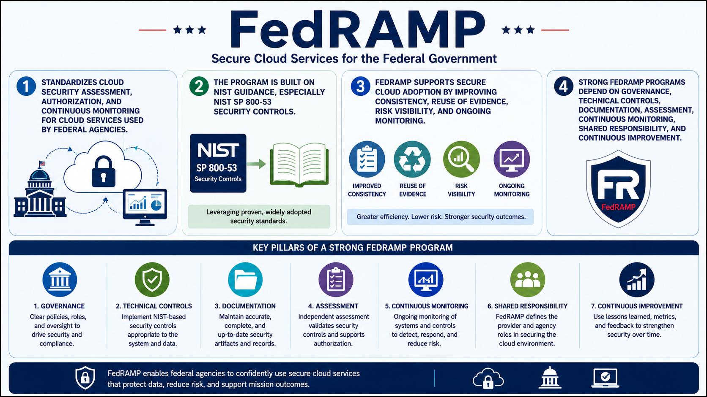

What Is FedRAMP?
Course Summary
Connecting to LMS... Progress: in progress
Version 1.0 | Date: 2026-06-16 | Educational overview of FedRAMP concepts.

Narration
FedRAMP standardizes cloud security assessment, authorization, and continuous monitoring for cloud services used by federal agencies.
The program is built on NIST guidance, especially NIST SP 800-53 security controls.
FedRAMP supports secure cloud adoption by improving consistency, reuse of evidence, risk visibility, and ongoing monitoring.
Strong FedRAMP programs depend on governance, technical controls, documentation, assessment, continuous monitoring, shared responsibility, and continuous improvement.